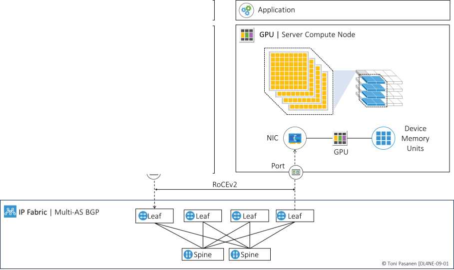
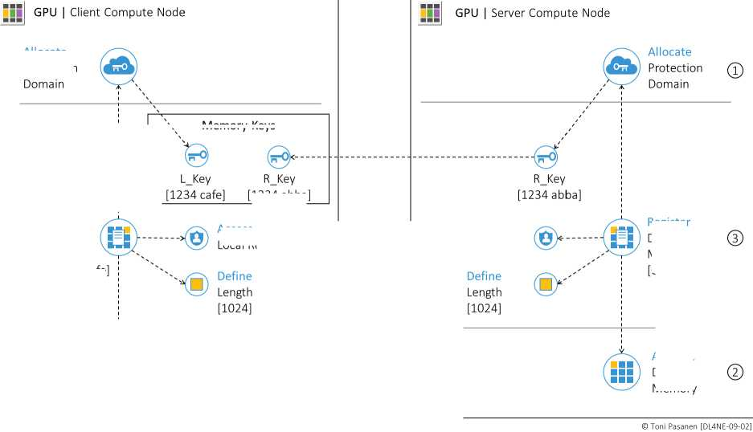

TCP/IP 每次收发都要进内核、拷贝、走协议栈，时延高、CPU 高、还抖动。RDMA 让网卡直接读写远端应用内存（bypass kernel，zero-copy），时延几微秒、带宽线速、CPU 几乎零占用。RoCEv2 跑在 UDP/IP 上，可路由，但 UDP 不保证可靠——可靠靠 lossless Fabric（PFC+ECN，Ch11）。
① Allocate：划一块内存；② Register：Pin 住防换出，生成 L_Key（本地用）与 R_Key（给远端，需带 R_Key 才能写我）；③ 定义地址+长度。类比：先在机房圈机柜、发门禁卡，远端凭卡+货位才能直接存货。书 p212-213 全流程。
每对连接建 QP：Send Queue（发请求）、Receive Queue（收）、Completion Queue（完工通知）。应用把 Work Request 扔进队列，网卡异步执行，完事写 CQ。应用只管扔单子、查回执，不碰数据搬运。


复述“圈地—发钥匙—扔单子—查回执”四步。